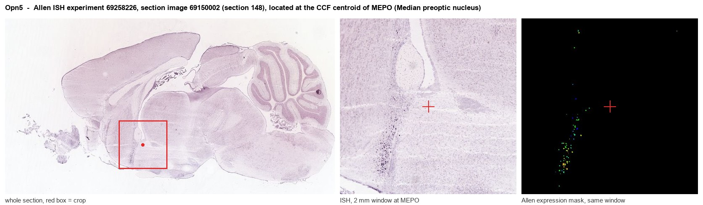

Opn5
Opsin-5 (G protein-coupled receptor 136) (G protein-coupled receptor PGR12) (Neuropsin)
Spatial tier: STRICT_EXCLUSIVE · Class: GPCR · Top region: MEPO (Median preoptic nucleus) · Positive regions: 4/554
47.5Discovery Score
41.8Targetability Score
CEvidence grade C
What this means: Opn5: predicted fine-region profile is strict-exclusive, with 4 positive regions out of 554 (limit 12); direct spatial validation is required.
Function in MEPO: evidence, prediction, innovation
- Gene function
- Opn5 encodes neuropsin (OPN5), a deep-brain UV/violet-sensitive opsin GPCR (peak ~380 nm) that uses 11-cis-retinal and couples to Gi/Go signalling, lowering cAMP. It is bistable and acts as a direct light sensor in skin, retina and hypothalamus.
- Region function
- The median preoptic nucleus is part of the preoptic thermoregulatory and body-fluid hub, integrating thermal input to drive brown-fat thermogenesis and vasomotor and behavioural thermoregulation, and also controlling thirst, sleep and fever.
- Published in this region
- direct Zhang et al. 2020 (Nature) showed Opn5 marks glutamatergic warm-sensing preoptic neurons receiving thermoregulatory input; Opn5-null mice have overactive brown adipose tissue, raised body temperature and exaggerated cold-induced thermogenesis, and violet light acutely suppresses BAT temperature in wild-type but not Opn5-null mice. Upton et al. 2021 (Front Neurosci) placed these cells in the QPLOT (Qrfp/Ptger3/LepR/Opn5/Tacr3) thermoregulatory population spanning median and medial preoptic areas.
- Predicted function
- Prediction: In the median preoptic nucleus OPN5 acts as an intrinsic violet-light sensor on warm-sensitive glutamatergic QPLOT neurons, biasing them towards thermogenesis suppression via Gi-mediated cAMP reduction. Conditional Opn5 deletion in these neurons should raise BAT activity, core temperature and energy expenditure and abolish violet-light suppression of thermogenesis; chemogenetic activation should lower BAT and core temperature and weaken cold defence.
- Innovation
- ★★☆☆☆ 2/5 The Opn5 preoptic thermoregulatory pathway is established, but its specific cellular role and circuit output within the median preoptic nucleus itself remain only partly mapped.
- Tools
- Opn5-cre and Opn5-null (lacZ knock-in) mice from the Lang laboratory (Zhang 2020, Buhr 2019); violet 380-410 nm LED/fibre photostimulation; Cre-dependent DREADD and ChR2 AAVs; no selective OPN5 pharmacology.
- References
Direct evidence located at the region

Allen ISH experiment 69258226, section image 69150002 (section 148): the section that contains the CCF centroid of Median preoptic nucleus according to the Allen image-to-atlas alignment (reference_to_image), with a 2 mm window around that point. Left: whole section, red box = window. Middle: ISH signal. Right: Allen's expression-mask view of the same window. open this image in the Allen viewer
Look it up yourself: Allen Mouse Brain ISH for Opn5Allen reference atlas: MEPO (structure 452)ABC Atlas MERFISH viewer(in the ABC Atlas choose dataset MERFISH-C57BL6J-638850-CCF, colour cells by gene "Opn5" or by parcellation_substructure "MEPO")All genes confined to MEPO + 3-D brain
Direct spatial evidence
MERFISH REGION LOCATOR

DIRECT ALLEN ISH

DIRECT ALLEN ISH

Regional expression figure

Predicted WMB × fine-CCF profile; not direct full-transcriptome spatial measurement.
Spatial profile
Evidence and specificity
- Evidence status
- PREDICTED_FINE
- Direct sources
- None; predicted localization only
- Exclusive threshold
- 12 positive regions out of 554
- Spatial specificity
- 0.404
- Top-region fraction
- 0.185
- Filter status
- PASS
Interpretation limits
- Cell-type-to-region projection is imputed expression, not direct spatial measurement.
- Adult reference atlases do not establish stability across age, sex, strain, state, or disease.
- Transcript abundance does not guarantee protein abundance or genetic-tool performance.